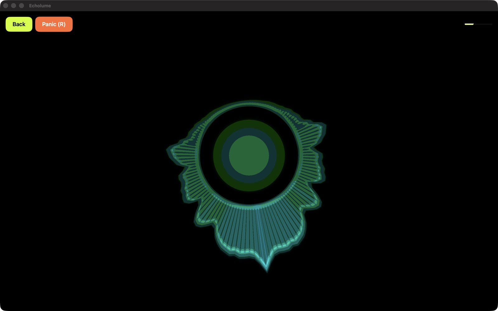
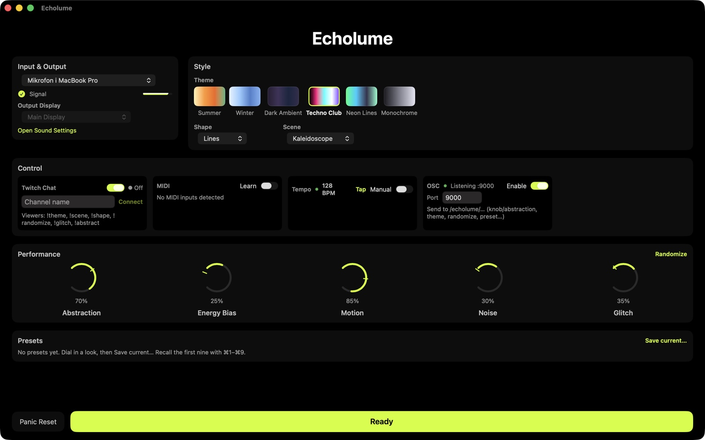
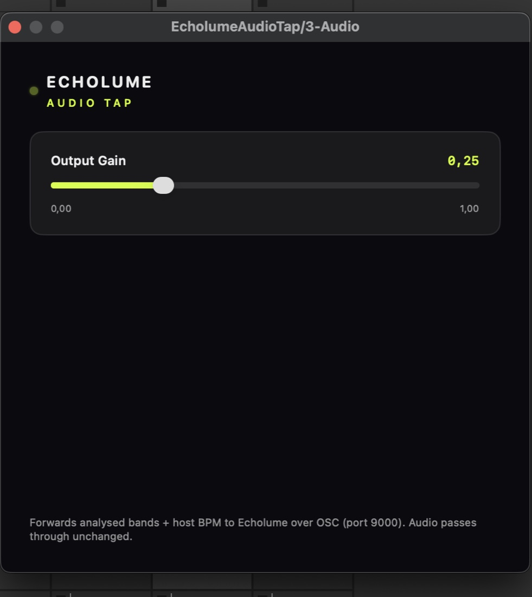
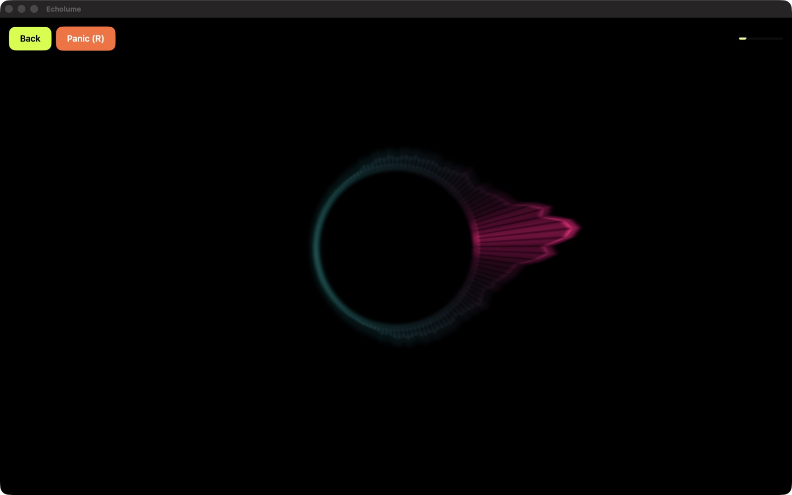

Sound into light
Live audio‑reactive visuals for macOS
Metal-powered 2D visuals that react to your sound in real time. Pick your input, choose a theme, hit Ready — and perform. Complete with DAW plugin, OSC and MIDI control.
Get EcholumeSee it in action
Real-time visuals driven by live audio — from a single microphone to a full DAW rig.




Built for performance
Low-latency rendering and advanced control integrations, tailored for visual artists, musicians, and streamers.
-
AUv3 DAW Tap
DAW audio routing
Drop the bundled EcholumeAudioTap AUv3 plugin onto Ableton Live or Logic Pro tracks to stream analysis parameters and host BPM to Echolume over local OSC. No virtual loopback drivers required.
-
BPM & Beat Sync
Tempo-synced shaders
Auto-detect track BPM using autocorrelation analysis. Sync visuals to a phase-locked loop beat pulse. Supports manual Tap Tempo buttons or MIDI-triggered BPM locking.
-
Twitch Integration
Interactive stream sets
Connect Echolume directly to Twitch chat as an anonymous reader. Let viewers randomize themes, switch scenes, adjust abstraction, or recall presets using rate-limited chat commands.
-
MIDI Learn & OSC
Hardware & show control
Bind any hardware MIDI slider, knob, or button to visual parameters. Listen to custom OSC UDP packets from Resolume or TouchDesigner on port 9000 to automate your rig.
-
Presets Store
Instant visual presets
Save complex visual configurations (theme, scene, shape, knob positions) and recall them instantly with keyboard hotkeys
⌘1–⌘9, OSC messages, or Twitch command parameters. -
Metal Renderer
Low-latency Metal engine
Renders high-FPS procedural shapes and two-pass decaying feedback/trail accumulation. Run visuals fullscreen on an external display while controlling Setup on your main screen.
-
Menu Bar Control
Menu bar extra utility
A native status bar menu provides access to Panic Reset (visual trails), Randomize visual seeds, or Audio Engine Restarts while running other apps fullscreen.
-
Device Switching
In-app audio switching
Enumerate and switch audio input sources and stereo channel pairs in-app. Safe fallback keeps visuals alive if an external audio interface disconnects mid-set.
Download Echolume
Echolume is a standalone application requiring macOS 14 (Sonoma) or later. The AUv3 plugin requires an AUv3-compatible host like Ableton Live 11.3+ or Logic Pro.
Download on the Mac App StoreLaunching on the Mac App Store — a one-time purchase ($19.99), yours forever. The bundled AUv3 plugin registers automatically on first launch.